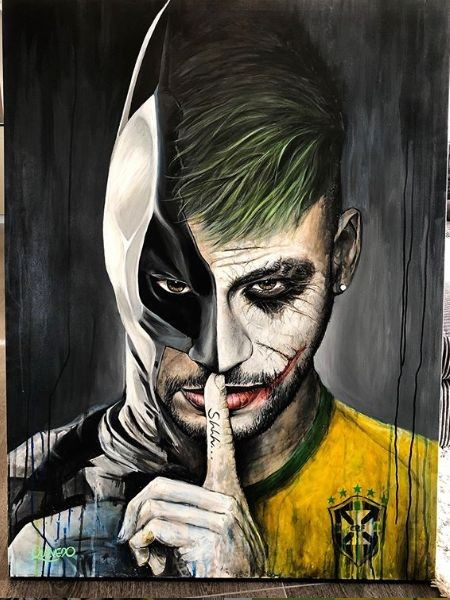

Neymar: O Caos Perfeito
Um olhar exclusivo sobre a carreira e a vida fora dos campos de um dos jogadores mais famosos e controversos do mundo. Acompanhe os bastidores, os altos e baixos, e descubra o verdadeiro Neymar por trás da fama.
Assista ao Trailer
Comparativo de Jogadores
| Jogador | Posição | Características |
|---|---|---|
| Neymar | Habilidade extrema, dribles imprevisíveis, liderança | Atacante |
| Messi | Habilidade de drible, visão de jogo excepcional | Atacante |
| Ronaldo | Força física, precisão nos chutes, poder de finalização | Atacante |